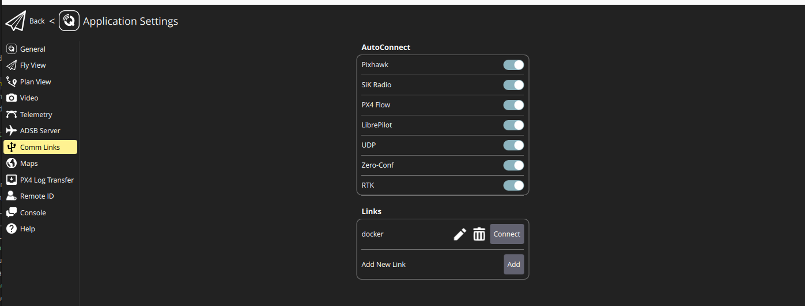
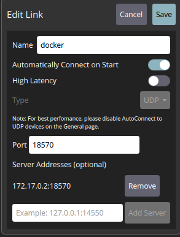

Quick Start Guide: Launching a Simulation with ROS2_UAV Framework
Prerequisites
- Install Docker and ensure it is running on your system. You will need the
nvidia-container-runtimesince the simulation requires NVIDIA GPUs. - Download the latest QGroundControl to access the necessary modes.
Steps
1. Launch the PX4 SITL Simulation
Go to the tools/docker_scripts folder and start the simulation using the provided custom configuration file:
cd tools/docker_scripts
./launch_simulation.sh -f ../configurations/simulation_config_custom.yaml -b main -a
This command opens a Gazebo window featuring drone models, with the px4_sitl container running in the background.
2. Launch the Control Nodes
Return to the tools/docker_scripts folder and initiate the control nodes using the same configuration file:
cd tools/docker_scripts
./launch_simulation_nodes.sh -f ../configurations/simulation_config_custom.yaml
This action starts the ros2_uav_px4 container, controlling the drones in the background.
3. Retrieve Docker IP Address
Get the IP address of your Docker container running the PX4 SITL:
docker inspect -f '{{range.NetworkSettings.Networks}}{{.IPAddress}}{{end}}' px4_sitl
4. Configure Communication Links in QGroundControl
Adding a New Link
- Open QGroundControl.
- Proceed to Application Settings.

- Click Comm Links in the sidebar.
- Hit Add.

- Select
UDPas the Type. - Specify the Port as
18570 + drone_number. For instance, for drone number 1 (namespace /uav1), set it to18571. - Input the Docker IP you noted earlier into Server Addresses.
- Press Add Server.
- Click Save.
Connect the Link
After setup, choose the newly added link and click Connect to link up with the drone.
5. Selecting the Mode
From the main screen of QGroundControl, pick a mode for your drone, such as Offboard Position. The drone will ascend and hover at a designated altitude, with position control managed by the ros2_uav_px4 container's control node.
6. Sending a Setpoint
cd tools/docker_scripts
./send_setpoint.sh uav0 0 0 2 0
Here, uav0 is the drone's namespace, 0 0 2 represents the x, y, z coordinates, and 0 is the heading.